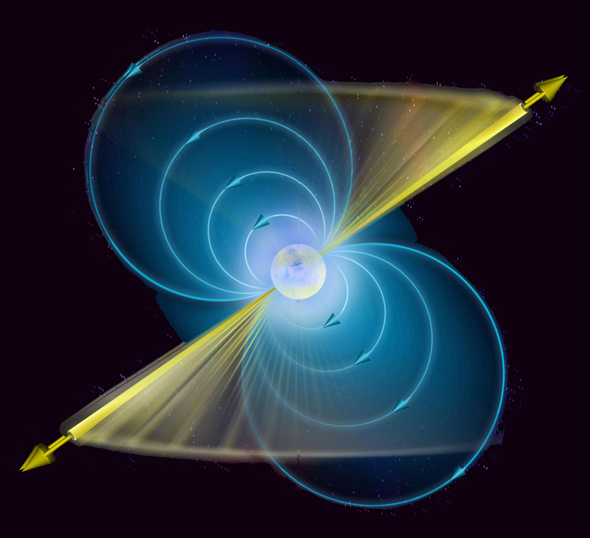

Pulsar Science Collaboratory
Part of the Pulsar Science Collaboratory, analyzing radio telescope data to find new pulsars. Has analyzed over 4000 prepfold plots. Also meets with the UW Bothell PSC team every week, presenting a part of a scientific paper.
